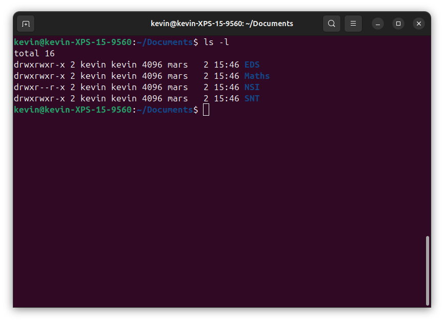

Gestion des droits d'acc√®s aux fichiers üîí
Nous avons vu que le système d’exploitation a pour mission de gérer les utilisateurs et de leur attribuer les ressources de l’ordinateur.
L’un de ses rôles essentiels est de réglementer l’accès aux fichiers afin d’éviter des erreurs ou des incidents.
En effet :
- ❌ Un utilisateur ne doit pas pouvoir modifier ou supprimer les fichiers d’un autre utilisateur.
- ❌ Un utilisateur ne doit pas pouvoir supprimer des dossiers critiques du système, sous peine de provoquer des dysfonctionnements ou pannes.
Sous Linux, ces accès sont strictement contrôlés par un système de droits d’accès appliqué aux fichiers et répertoires.
üìå Objectif : comprendre comment Linux g√®re les droits d‚Äôacc√®s aux fichiers et comment ils peuvent √™tre modifi√©s.
1 - Organisation des utilisateurs sous Linux üë•
Sous Linux, les utilisateurs sont organisés de manière à faciliter la gestion des droits d’accès.
L‚Äôutilisateur "root" : le super-utilisateur üõ†Ô∏è
Il existe un utilisateur spécial qui dispose de tous les droits sur le système :
- Cet utilisateur est appelé "root" ou "administrateur".
- Il peut modifier, supprimer et accéder à tous les fichiers et configurations du système.
- Son utilisation doit être limitée pour éviter des erreurs critiques.
Les groupes d‚Äôutilisateurs üìÇ
Pour simplifier la gestion des droits, les utilisateurs peuvent être regroupés en "groupes" :
- Un groupe permet d’attribuer des droits communs à plusieurs utilisateurs.
- Plutôt que d’accorder des droits individuellement à chaque utilisateur, on accorde ces droits au groupe, et tous ses membres en bénéficient automatiquement.
À retenir !
L’utilisateur root a tous les pouvoirs sur le système. Pour éviter de devoir gérer les droits individuellement, Linux permet d’organiser les utilisateurs en groupes et d’attribuer les permissions à un groupe entier plutôt qu’à chaque utilisateur séparément.
2 - Types d‚Äôacc√®s accord√©s üîë
Sous Linux, chaque fichier et répertoire est associé à des droits d’accès qui définissent ce que les utilisateurs peuvent faire avec.
Quels droits peut-on accorder sur un fichier ou un répertoire ?
Sous Linux, trois types de droits d’accès peuvent être accordés :
- Lecture (
rpour read) üìñ : permet de lire le contenu de l‚Äô√©l√©ment. - √âcriture (
wpour write) ✍️ : permet de modifier le contenu de l’élément. - Exécution (
xpour execute) ⚙️ : permet d’exécuter l’élément s’il s’agit d’un programme ou d’un script.
À qui peut-on accorder ces droits ?
Les droits d’accès sont attribués à trois catégories d’utilisateurs :
- Le propriétaire (
upour user) üë§ : l‚Äôutilisateur qui poss√®de l‚Äô√©l√©ment. - Le groupe (
gpour group) üë• : l‚Äôensemble des utilisateurs appartenant au m√™me groupe. - Les autres utilisateurs (
opour other) üåç : tous ceux qui ne sont ni propri√©taires ni membres du groupe associ√© √† l‚Äô√©l√©ment.
üîπ Remarque :
Il existe aussi une quatrième catégorie, "Tous les utilisateurs" (a pour all), qui désigne tous les utilisateurs du système, sans distinction.
Détaillons la réponse de Linux à la commande « ls » évoquée précédemment, dont voici un exemple.

On observe :
- la ligne de commande
ls-l : l’option-lpermet d’obtenir une réponse avec plus de détails que dans celle de la commandelsseule, en particulier les droits d’accès. -
deux lignes de réponse se suivent, organisées suivant la présentation suivante :

Dans l'image précédente, on remarque ainsi que :
- Pour les dossiers nommés EDS, Maths et SNT, le propriétaires et le groupe possèdent tous les droits (lecture, écriture et exécution) alors que les autres en possèdent que les droits de lecture et d'exécution.
- Pour le dossier nommé NSI, le propriétaire a tous les droit, le groupe seulement le droit de lecture et les autres le droit de lecture et d'exécution.
3 - Outils pour g√©rer les droits d‚Äôacc√®s üõ†Ô∏è
Sous Linux, nous pouvons gérer les droits d’accès aux fichiers et répertoires avec des commandes en mode texte. Cela permet :
- D’ajouter ou de supprimer des droits sur un élément,
- De changer le propriétaire ou le groupe d’un élément.
Commandes principales üìå
| Commande | Signification | Explication | Exemples |
|---|---|---|---|
chown |
change owner | Modifier le propriétaire ou le groupe d’un fichier/répertoire. | chown toto:myhome boulot (change le propriétaire du répertoire boulot en toto) chown myhome:titi boulot (change le groupe du répertoire boulot en titi) |
chmod |
change mode | Modifier les droits d’accès sur un fichier ou un répertoire. | chmod g+w boulot (ajoute le droit d’écriture au groupe pour boulot) chmod o-r Documentation_FGMS-001-FRA-v1.01.pdf (retire le droit de lecture aux "autres" utilisateurs) |
Syntaxe de chown üìù
On pourra en utiliser des variantes en fonction de l'objectif :
-
Changer le propriétaire d'un fichier :
-
Changer le groupe propriétaire d'un fichier :
-
Changer le propriétaire et/ou le groupe propriétaire d'un fichier :
Syntaxe de chmod üìù
Pour comprendre le fonctionnement de la commande chmod, il faut se rappeler que :
- u signifie user (propriétaire);
- g signifie group (groupe);
- o signifie other (autres);
- a signifie all (tous).
Ainsi que des opérations suivantes :
- + signifie : "Ajouter le droit"
- - signifie : "Supprimer le droit"
- = signifie : "Affecter le droit"
La structure gérérale de la commande est la suivante :

Voici quelques exemples pratiques :
-
Ajouter le droit d'écriture au groupe sur
rapport.odt: -
Enlever le droit de lecture aux autres sur
photo2.jpg: -
Ajouter le droit d'écriture et d'exécution au propriétaire sur
calculs.odset enlever le droit d'écriture aux autres :ou encore :